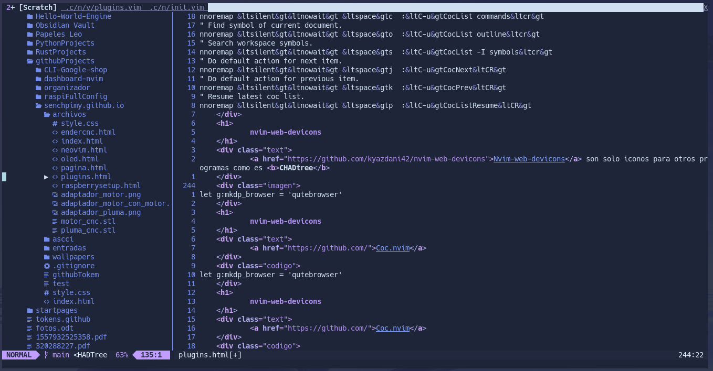
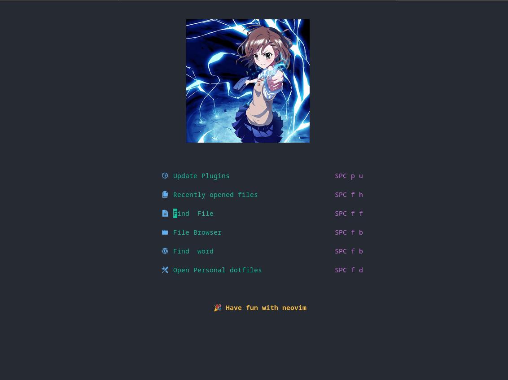
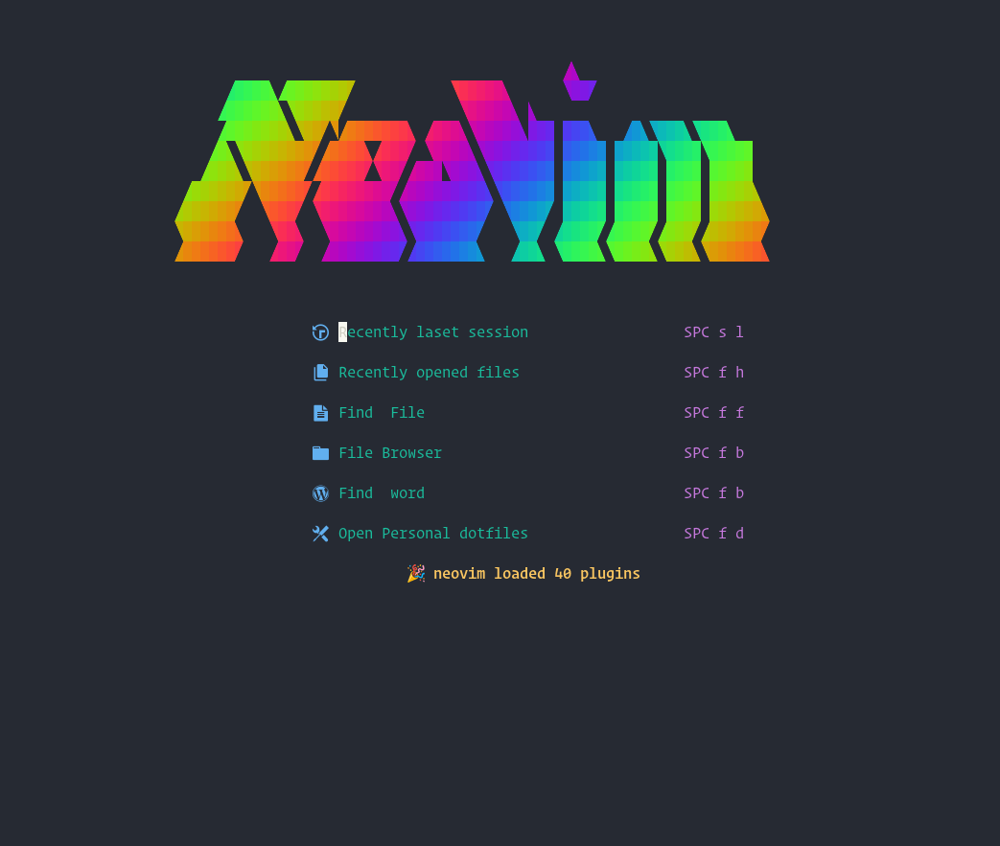

En esta entrada explicare todos los plugins que tengo en neovim y que funcion cumplen, asi sobre como estan configurados en mi init.vim y por que esos y no otros
Indentline
Vim Indentline es un plugin simple que solo agrega una barra como "|" cuando se detecta un indentLine, mis configuraciones son las siguientes
let g:indentLine_char_list = ['|', '¦', '┆', '┊']
let g:indentLine_enabled = 0
nmap <space>l <cmd>IndentLinesToggle<CR>
Lo que hacen es que conforme existan mas indentLines el plugin mostrara la linea correspondiente en alguno de esos 4 posibles estilos,
y la segunda configuracion hace que el plugin este apagado por defecto pues yo solo lo ocupo para python.
La tercera linea hace cuando se apreite "Espacio+ l" el plugin se active o se desactive
Rnvimr
Rnvimr es un plugin que hace que se pueda ejecutar el administrador de archivos ranger desde neovim, esto lo incluye con todos los comandos que tengas configurados en ranger
nmap <space>r <cmd>RnvimrToggle<CR>
Esa unica linea de configuracion hace que con "Espacio+r" se abra el programa, en la documentacion se pueden ver mas opciones de su uso, se sale de la aplicacion con "q", si se ejecuta en la aplicacion de ranger el comando ":q" se cerrara ranger pero seguira existiendo un gran cuadrado en donde estaba la ventana de el programa para eso tambien cree el siguiente comando que con "Espacio + q" se cerrara el programa y el espacio donde estaba, ahora ya no la ocupo pues todo se cierra solo con "q" pero la configuracion era la siguiente
nmap <space>q <cmd>q <bar><cmd>q
Markdown-previous.nvim
Markdown-previous.nvim es un plugin que como su nombre lo dice da una preview de un archivo Markdown (.md, .MD), para que este plugin funcione se debe tener instalado yarn y node, este plugin funciona con muchos tipos de archivos que crean archivos de texto, ademas que cualquier cambio se ve reflejado en tiempo real en la previsualizacion en el navegador que especifiques, en mi caso qutebrowser y para hacerlo solo use la linea de a continuacion
let g:mkdp_browser = 'qutebrowser'
Pywal
Pywal es un plugin que cambia el tema de neovim segun los colores que lee de Pywal, que es una programa que extrae la paleta de colores de una imagen, este plugin lee uno de los varios archivos que este produce (pues pywal puede obtener los colores en diferentes formatos) y lo utiliza para generar el tema de nvim, prefiero este plugin en lugar de wal.vim aunque ambos cumplen la misma funcion pywal lo hace con la configuracion de neovim "set termguicolors" que es necesaria para otros plugins mientras que wal.vim es incompatible con esta configuracion, para este plugin no existe cconfiguracion extra
Telescope.nvim
Telescope.nvim es un buscador multiusos de neovim, tiene varias funciones y muchas no las utilizo, solo lo ocupo para estas tres funciones
Lo que hacen es abrir los archivos recientemente editados en neovim, busca archivos y me permite moverme entre differentes buffers, esto con las siguientes teclas "Espacio+o"=Archivos recientemente editados
"Espacio+f"=Buscar archivos
"Espacio+b"=Mostrar los diferentes buffers abiertos
Este plugin tiene muchas otras funciones, yo lo ocupo para moverme mas rapido entre mis archivos, este plugins requiere de otro plugin llamado plenary.nvim
coc.nvim
Coc.nvim Es un plugin que funciona para atuocompletar codigo en diferentes lenguajes de programacion, se requiere mucha configuracion pero, existe una configuracion por defecto que esta disponible en la pagina de github del el programa, esa misma configuracion es la que uso y la que me funciona bien
" Some servers have issues with backup files, see #649.
set nobackup
set nowritebackup
" Having longer updatetime (default is 4000 ms = 4 s) leads to noticeable
" delays and poor user experience.
set updatetime=300
" Always show the signcolumn, otherwise it would shift the text each time
" diagnostics appear/become resolved.
set signcolumn=yes
" Use tab for trigger completion with characters ahead and navigate.
" NOTE: Use command ':verbose imap <tab>' to make sure tab is not mapped by
" other plugin before putting this into your config.
inoremap <silent><expr> <TA&>
\ coc#pum#visible() ? coc#pum#next(1):
\ CheckBackspace() ? "\<Tab>" :
\ coc#refresh()
inoremap <expr><S-TAB> coc#pum#visible() ? coc#pum#prev(1) : "\<C-h>"
" Make <CR> to accept selected completion item or notify coc.nvim to format
" <C-g>u breaks current undo, please make your own choice.
inoremap <silent><expr> <CR> coc#pum#visible() ? coc#pum#confirm()
\: "\<C-g>u\<CR>\<c-r>=coc#on_enter()\<CR>"
function! CheckBackspace() abort
let col = col('.') - 1
return !col || getline('.')[col - 1] =~# '\s'
endfunction
" Use <c-space> to trigger completion.
if has('nvim')
inoremap <silent><expr> <c-space> coc#refresh()
else
inoremap <silent><expr> <c-@> coc#refresh()
endif
" Use `[g` and `]g` to navigate diagnostics
" Use `:CocDiagnostics` to get all diagnostics of current buffer in location list.
nmap <silent> [g <Plug>(coc-diagnostic-prev)
nmap <silent> ]g <Plug>(coc-diagnostic-next)
" GoTo code navigation.
nmap <silent> gd <Plug>(coc-definition)
nmap <silent> gy <Plug>(coc-type-definition)
nmap <silent> gi <Plug>(coc-implementation)
nmap <silent> gr <Plug>(coc-references)
" Use K to show documentation in preview window.
nnoremap <silent> K :call ShowDocumentation()<CR>
function! ShowDocumentation()
if CocAction('hasProvider', 'hover')
call CocActionAsync('doHover')
else
call feedkeys('K', 'in')
endif
endfunction
" Highlight the symbol and its references when holding the cursor.
autocmd CursorHold * silent call CocActionAsync('highlight')
" Symbol renaming.
nmap <leader>rn <Plug>(coc-rename)
" Formatting selected code.
xmap <leader>f <Plug>(coc-format-selected)
nmap <leader>f <Plug>(coc-format-selected)
augroup mygroup
autocmd!
" Setup formatexpr specified filetype(s).
autocmd FileType typescript,json setl formatexpr=CocAction('formatSelected')
" Update signature help on jump placeholder.
autocmd User CocJumpPlaceholder call CocActionAsync('showSignatureHelp')
augroup end
" Applying codeAction to the selected region.
" Example: `<leader>aap` for current paragraph
xmap <leader>a <Plug>(coc-codeaction-selected)
nmap <leader>a <Plug>(coc-codeaction-selected)
" Remap keys for applying codeAction to the current buffer.
nmap <leader>ac <Plug>(coc-codeaction)
" Apply AutoFix to problem on the current line.
nmap <leader>qf <Plug>(coc-fix-current)
" Run the Code Lens action on the current line.
nmap <leader>cl <Plug>(coc-codelens-action)
" Map function and class text objects
" NOTE: Requires 'textDocument.documentSymbol' support from the language server.
xmap if <Plug>(coc-funcobj-i)
omap if <Plug>(coc-funcobj-i)
xmap af <Plug>(coc-funcobj-a)
omap af <Plug>(coc-funcobj-a)
xmap ic <Plug>(coc-classobj-i)
omap ic <Plug>(coc-classobj-i)
xmap ac <Plug>(coc-classobj-a)
omap ac <Plug>(coc-classobj-a)
" Remap <C-f> and <C-b> for scroll float windows/popups.
if has('nvim-0.4.0') || has('patch-8.2.0750')
nnoremap <silent><nowait><expr> <C-f> coc#float#has_scroll() ? coc#float#scroll(1) : "\<C-f>"
nnoremap <silent><nowait><expr> <C-b> coc#float#has_scroll() ? coc#float#scroll(0) : "\<C-b>"
inoremap <silent><nowait><expr> <C-f> coc#float#has_scroll() ? "\<c-r>=coc#float#scroll(1)\<cr>" : "\<Right>"
inoremap <silent><nowait><expr> <C-b> coc#float#has_scroll() ? "\<c-r>=coc#float#scroll(0)\<cr>" : "\<Left>"
vnoremap <silent><nowait><expr> <C-f> coc#float#has_scroll() ? coc#float#scroll(1) : "\<C-f>"
vnoremap <silent><nowait><expr> <C-b> coc#float#has_scroll() ? coc#float#scroll(0) : "\<C-b>"
endif
" Use CTRL-S for selections ranges.
" Requires 'textDocument/selectionRange' support of language server.
nmap <silent> <C-s> <Plug>(coc-range-select)
xmap <silent> <C-s> <Plug>(coc-range-select)
" Add `:Format` command to format current buffer.
command! -nargs=0 Format :call CocActionAsync('format')
" Add `:Fold` command to fold current buffer.
command! -nargs=? Fold :call CocAction('fold', <f-args>)
" Add `:OR` command for organize imports of the current buffer.
command! -nargs=0 OR :call CocActionAsync('runCommand', 'editor.action.organizeImport')
" Add (Neo)Vim's native statusline support.
" NOTE: Please see `:h coc-status` for integrations with external plugins that
" provide custom statusline: lightline.vim, vim-airline.
set statusline^=%{coc#status()}%{get(b:,'coc_current_function','')}
" Mappings for CoCList
" Show all diagnostics.
nnoremap <silent><nowait> <space>a :<C-u>CocList diagnostics<cr>
" Manage extensions.
nnoremap <silent><nowait> <space>e :<C-u>CocList extensions<cr>
" Show commands.
nnoremap <silent><nowait> <space>c :<C-u>CocList commands<cr>
" Find symbol of current document.
nnoremap <silent><nowait> <space>o :<C-u>CocList outline<cr>
" Search workspace symbols.
nnoremap <silent><nowait> <space>s :<C-u>CocList -I symbols<cr>
" Do default action for next item.
nnoremap <silent><nowait> <space>j :<C-u>CocNext<CR>
" Do default action for previous item.
nnoremap <silent><nowait> <space>k :<C-u>CocPrev<CR>
" Resume latest coc list.
nnoremap <silent><nowait> <space>p :<C-u>CocListResume<CR>
nvim-web-devicons
Nvim-web-devicons son solo iconos para otros programas como es CHADtree

gitsigns.nvim
Gitsigns.nvim es un plugin que nos deja usar y ver muchas funciones relacionadas el programa git (control y manejo de versiones de software) para poder ver en un archivo que lineas fueron eliminadas, en que commits y cuando se agreagron otras lineas, entre mucas otras funciones, esta escrito en lua y para poder ocuparlo es necesario que neovim lo llame, en un archivo de configuracion de vimscript para neovim (init.vim) se necesitan las siguietes tres lineas
lua >> END
require('gitsigns').setup()
END
El plugin tiene muchas otras configuraciones, pero por el momento no ocupo ninguna
vim-sorround
Vim-sorround es un plugin que por medio de comando cambia, elimina o añade elementos a una palabra, palabras o linea especificada, este no requiere de configuracion
suda.vim
Suda.vim es un plugin que nos permite editar archivos como super usuario son necesidad de salir de neovim y de tener que rehacer los cambios, est eplugin tiene 2 configuraciones, una es para que automaticamente se detecte los archivos que necesten sudo para ser vistos o editados y al momento de guardarlo pida la contraseña, y la segunda es un texto personalizado que se muestra al momento de solicitar la contraseña, yo no tengo ninguna de estas opciones activadas
Vim-Lastplace
Vim-Lastplace es un plugin que al momento de editar un archivo, cerrarlo y abrirlo de nuevo, el curso aparecera justo en la posicion anterior, justo antes de cerrarlo, tiene unas configuracions pero yo ocupo ninguna
CHADtree
CHADtree es un plugin que habre un arbol de archivos en la parte derecha de la pantalla, es un poco redundante tener Rnvimr, Telescope y Chadtree pues cumplen casi la misma funcion pero las pocas diferencias que tienen, hace que me sirvan para cosas distintas.
CHADtree tiene varias configuraciones pero yo no ocupo ninguna
Lualine.nvim
Lualine.nvim es un plugin que modifica la linea de estado de neovim logrando mostar mas informacion que la linea por defecto de nvim, y mucho pas personalizable, yo uso la configuracion por default pero existem muchos temas que luego probare, esta es en promedio mas rapida que lightline y airline, dos plugins hechos para cumplir el mismo proposito al igual que otros plugins este necesita ser llamado desde lua por lo que si ya tienes el plugin gitsigns solo hay que agragar la siguiente linea una lina arriba o abajo de la linea central de la configuracion de gitsigns
require('lualine').setup()
Si no tienes gitsigns hay que agregar todo lo siguiente
lua >> END
require('lualine').setup()
END
Dashboard.nvim
Dashboard.nvim es un plugin que modifica el buffer de inicio de neovim, con este plugin se puede modificar mucho el buffer de inicio, yo no sabia como modificarlo y por eso cree mi propia version y meti los cambio en el codigo fuente de el plugin, ahora que ya lo se editar desde el init.vim voy a cambiarlo por el del repositorio original, ya viene "activado" por defecto, la configuracion se hace al igual que gitsigns y lualine
local db = require('dashboard')
db. valor-a-configurar= valor


Vim-cool
Vim-cool desactiva el destacado en las palabras que hace vim despues de que terminas de buscar algo, y lo vuele a activar cuando buscas algo de nuevo, tiene solo una configuracion pero no la uso
Vim-hexokinase
Vim-hexokinase vim hexokinase es un plugin que cuando detecta que el documento contiene un color escrito, ya sea en rgb, hex, o por nombre (red, purple, green, blue, etc) muestra en pantalla el color que que esta escribiendo, en mi caso esta configurado para colorear las letras de el color que representan, la unica configuracion que tengo es para poder lograr este efecto
let g:Hexokinase_highlighters = ['backgroundfull']
Hop.nvim
Hop.nvim es un plugin que nos deja saltar a donde sea en nuestro documento con solo unos pocos tecleos, al usar el comando :HopWord por ejemplo el programa va a resaltar la inicial de todas las palabras con una letra diferente, al presionar esta letra el programa nos llevara al inicio de la letra que seleccionamos
Este programa tiene una configuracion similar a gitsigns y lualine
require'hop'.setup()
Lf.nvim
lf.nvim lf es un plugin que hace lo mismo que el de Rnvimr, la diferencia es que Rnvimr es para el programa ranger, este programa es un administrador de archivos desde la terminal, lf es exactamente lo mismo.
Entonce por que cambiar?
Ranger esta escrito en python y lf en go, lo que hace a lf muchisimo mas rapido al momento de cargar, lf es casi instantaneo mientras que ranger tiene aproximada 3 segundos de carga, este tiempo disminuye si no ha pasado mucho tiempo desde que se abrio pero aun asi es mas lento que lf
Este programa tiene una configuracion similar a gitsigns y lualine